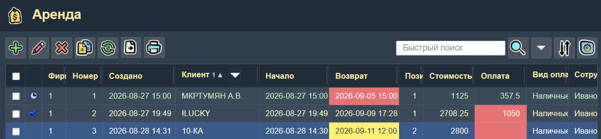
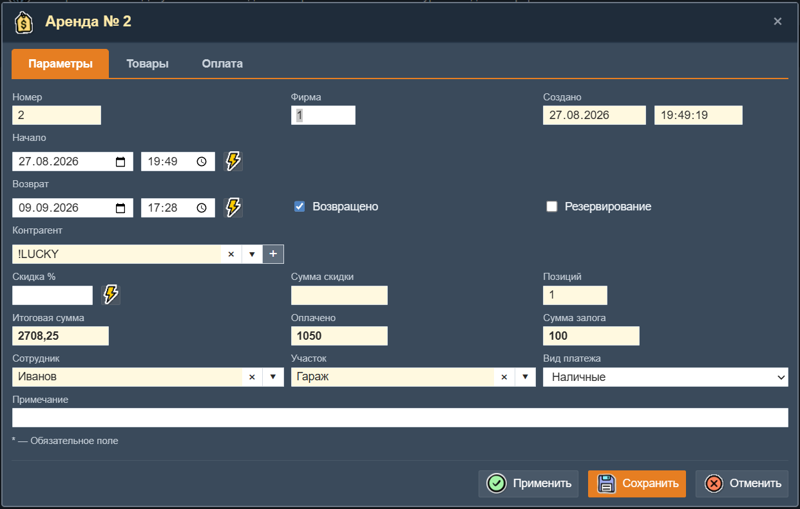
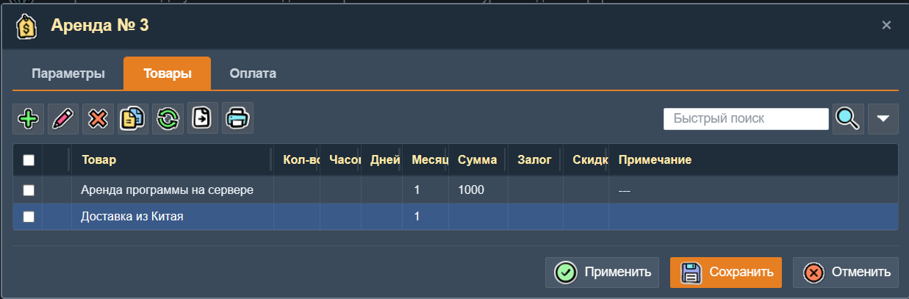
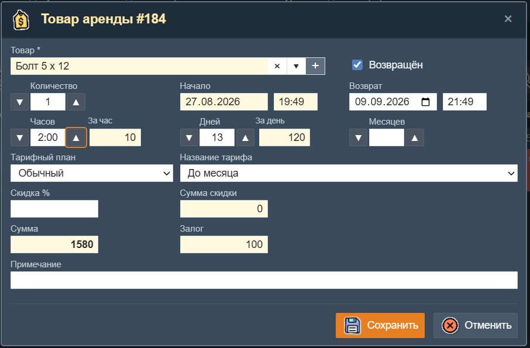
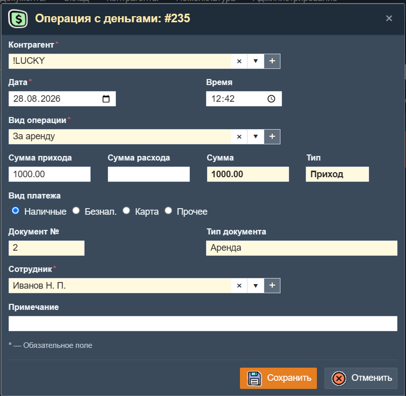

Аренда (прокат)
Аренда — подсистема для учёта выдачи товаров в прокат (аренду). Позволяет оформлять договоры аренды, управлять выдачей и возвратом товаров, отслеживать сроки, рассчитывать стоимость по тарифам, контролировать оплату и залоги.
В одном документе аренды может быть несколько товаров. Общая дата выдачи для всех товаров одна, но дата возврата каждого товара может быть своя.
Таблица документов аренды
При входе в раздел «Аренда» отображается таблица со списком всех документов аренды.

Таблица документов аренды.
Колонки таблицы
- Состояние — иконка статуса документа: «часы» означает резервирование, «галочка» — все товары возвращены.
- Номер — порядковый номер документа.
- Создано — дата и время создания документа.
- Клиент — арендатор. В заголовке колонки есть кнопка колоночного фильтра.
- Начало — дата и время начала аренды.
- Возврат — планируемая дата и время возврата товара. Цветовая индикация: красный фон — срок возврата просрочен; жёлтый фон — до возврата осталось меньше суток.
- Позиций — количество товарных позиций в документе.
- Стоимость — итоговая сумма аренды.
- Оплата — сумма оплаты. Красный фон означает, что оплата не полностью произведена.
- Вид оплаты — способ оплаты (например, Наличные).
- Сотрудник — сотрудник, оформивший документ.
- Примечание — комментарий к документу.
Документы можно сортировать, искать, фильтровать по клиенту, сотруднику и виду оплаты. Доступны печать и экспорт списка.
Цвет текста строки: светло-зелёный — документ в резервировании; светло-жёлтый — все товары возвращены.
Форма документа «Аренда»
Форма открывается при создании или редактировании документа и состоит из трёх вкладок: Параметры, Товары и Оплата.

Форма документа «Аренда». Вкладка «Параметры».
Вкладка «Параметры»
| Поле | Описание |
|---|---|
| Номер | Номер документа. Заполняется автоматически. |
| Фирма | Код фирмы. Реквизиты этой фирмы будут указаны в печатных документах. |
| Создано | Дата и время создания документа (только для чтения). |
| Начало | Дата и время начала аренды. Кнопка рядом позволяет установить время начала для всех товаров документа одновременно. |
| Возврат | Дата и время планируемого возврата. Кнопка рядом позволяет установить время возврата для всех товаров документа. Изменение может пересчитывать стоимость аренды. |
| Возвращено | Флажок. Если установлен, все товары документа возвращены. Устанавливает признак возврата у всех товаров и может изменять дату/время возврата и стоимость. |
| Резервирование | Флажок. Если установлен, товары зарезервированы под эту аренду. Влияет на «занятость» товаров в указанный период. |
| Контрагент | Арендатор. Обязательное поле для выбора из справочника. |
| Скидка % | Процент скидки. Кнопка рядом позволяет установить скидку для всех товаров документа и пересчитать суммы. |
| Сумма скидки | Общая сумма скидки по документу (рассчитывается автоматически). |
| Позиций | Количество товарных позиций в документе(рассчитывается автоматически). |
| Итоговая сумма | Общая стоимость аренды по документу (рассчитывается автоматически). |
| Оплачено | Сумма внесённой оплаты (рассчитывается автоматически по записям платежей). |
| Сумма залога | Общая сумма залога по всем товарам документа. |
| Сотрудник | Ответственный сотрудник. |
| Участок | Склад (участок), с которого выдаётся товар. |
| Вид платежа | Способ оплаты: Наличные, Безнал., Карта, Прочее. |
| Примечание | Произвольный комментарий к документу. |
Вкладка «Товары»
На этой вкладке находится таблица со списком арендуемых товаров документа.

Вкладка «Товары» — список арендуемых позиций.
Колонки таблицы товаров
- Состояние — иконка возврата или резервирования.
- Товар — название товара.
- Количество — число единиц товара.
- Часов — количество часов аренды (отображается, если включен параметр «Показывать поле Часов»).
- Дней — количество дней аренды (отображается, если включен параметр «Показывать поле Дней»).
- Месяцев — количество месяцев аренды (отображается, если включен параметр «Показывать поле Месяцев»).
- Сумма — стоимость аренды по данной позиции.
- Залог — сумма залога за товар.
- Скидка % — процент скидки.
- Сумма скидки — сумма скидки по позиции.
- Примечание — комментарий к позиции.
Двойной щелчок по строке товара открывает форму редактирования позиции. При редактировании через встроенную таблицу выполняются те же проверки и расчёты, что и в полной форме.
Форма «Товар аренды»
Форма открывается при добавлении или редактировании отдельной товарной позиции в документе аренды.

Форма «Товар аренды».
| Поле | Описание |
|---|---|
| Товар* | Арендуемый товар. Обязательное поле выбора из справочника товаров. |
| Возвращён | Флажок. Устанавливается, если конкретный товар возвращён. Может изменять дату/время возврата и пересчитывать стоимость. |
| Количество | Число единиц товара. Отображается только если у товара не включен признак «Без количества». Кнопки «Вверх» и «Вниз» позволяют быстро изменить значение. Приложение может ограничивать количество выдаваемого товара если на данном участке не хватает его остатка. На ограничение влияет параметр настройки "Запрет отрицательных остатков" а также флаг товара "Не вычислять остаток". |
| Начало | Дата и время начала аренды (только для чтения, наследуется из документа). |
| Возврат | Дата и время возврата данного товара. Может отличаться от возврата других товаров. Изменение автоматически пересчитывает количество часов, дней и месяцев. |
| Часов | Количество часов аренды в формате «чч:мм». Кнопки Вверх/Вниз для быстрого изменения на 1 час. Отображается если включен параметр «Показывать поле Часов». |
| За час | Тариф за час. Автоматически подбирается из таблицы тарифов данного товара. Доступен для редактирования только в режиме ручного ввода тарифов. |
| Дней | Количество дней аренды. Кнопки Вверх/Вниз для быстрого изменения. Отображается если включен параметр «Показывать поле Дней». |
| За день | Тариф за день. Автоматически подбирается из таблицы тарифов товара. |
| Месяцев | Количество месяцев аренды. Отображается если включен параметр «Показывать поле Месяцев». |
| За месяц | Тариф за месяц. Автоматически подбирается из таблицы тарифов. |
| Тарифный план | Группа тарифов (например, «Обычный», «Праздничный»). Автоматически определяется по сезону, если включена настройка «Использовать сезоны». |
| Название тарифа | Выбор фиксированного тарифа из списка тарифов товара. При выборе фиксированного тарифа поля "Часов", "Дней" и "Месяцев" скрываются. |
| Скидка % | Процент скидки на данную товарную позицию. |
| Сумма скидки | Рассчитывается автоматически (только для чтения). |
| Сумма | Итоговая стоимость аренды позиции (рассчитывается автоматически). |
| Залог | Сумма залога за позицию (рассчитывается автоматически). Если у клиента включён признак «Без залога», поле равно нулю. |
| Примечание | Произвольный комментарий. |
Система тарифов
Подсистема аренды поддерживает несколько способов расчёта стоимости, которые определяются параметрами настройки приложения и настройками каждого товара.
Параметры настройки, влияющие на тарифы
На странице «Параметры настройки», на вкладке «Аренда», доступны следующие настройки:
| Параметр | Описание |
|---|---|
| Показывать поле Часов | Включает видимость поля «Часов» и тарифа «За час» в форме товара. Если выключено, часы не учитываются при расчёте стоимости. |
| Показывать поле Дней | Включает видимость поля «Дней» и тарифа «За день». Если выключено, дни не учитываются. |
| Показывать поле Месяцев | Включает видимость поля «Месяцев» и тарифа «За месяц». Если выключено, месяцы не учитываются. |
| Тарифы вводятся вручную | Поля тарифов «За час», «За день», «За месяц» становятся доступными для редактирования. Отключается автоматический подбор тарифов. |
| Фиксированные тарифы за период времени | Включает использование фиксированных тарифов из таблицы тарифов товара в качестве основных. В этом режиме фиксированный режим автоматически подбирается в зависимости от срока аренды. |
| Не возвращать деньги при досрочном возврате | При досрочном возврате стоимость аренды не пересчитывается. |
| Не изменять «Дней» при досрочном возврате | При включении признака «Возвращено» количество дней не изменяется. |
| Использовать сезоны тарифных планов | Тарифный план автоматически определяется по дате начала аренды на основе периода сезона тарифного плана. |
| Время задержки начала проката | Бесплатное время, добавляемое к текущему времени при оформлении. Формат «чч:мм». |
Простые тарифы (на основе цен товара)
Самый простой способ — задать цены за час, за день и за месяц прямо в параметрах товара (вкладка «Параметры» страницы «Товары»). При таком способе тариф не изменяется в зависимости от длительности аренды.
Если в товаре задан "Период аренды" (например, «День»), то при добавлении товара в документ автоматически устанавливается соответствующее количество (1 день, 1 час или 1 месяц).
Тарифы, зависящие от времени (таблица тарифов)
Для автоматического изменения тарифа в зависимости от длительности аренды используются таблица тарифов товара (вкладка «Тарифы» на странице товара). Каждая запись этой таблицы задаёт период (например, от 1 до 3 дней, от 3 до 7 дней и т.д.) и соответствующую цену аренды.
Когда пользователь изменяет количество часов, дней или месяцев, система автоматически находит подходящий тариф в таблице тарифов и устанавливает соответствующие цены.
Для выходных дней можно задать отдельный тариф. Например, если по выходным цена выше, это указывается отдельным полем «Выходной» в тарифе.
Фиксированные тарифы
Фиксированный тариф — это тариф, который не умножается на количество часов, дней или месяцев. Например, «Неделя» за фиксированную сумму независимо от того, сколько дней указано.
Фиксированный тариф выбирается вручную из списка «Название тарифа» в форме товара аренды. При его выборе поля «Часов», «Дней», «Месяцев» и их тарифов скрываются.
Если в настройках приложения включён параметр «Фиксированные тарифы за период времени», то система может автоматически подбирать подходящий фиксированный тариф по длительности периода, указанного в записи о тарифе.
Тарифные планы и сезоны
Тарифный план определяет, какая группа тарифов будет использоваться. Например, план «Обычный» и план «Праздничный» могут иметь разные цены.
Если включён параметр «Использовать сезоны тарифных планов», то тарифный план автоматически определяется по дате начала аренды. Например, если аренда начинается в июле (летний сезон), автоматически выбирается план с летними тарифами.
Расчёт стоимости
Стоимость аренды рассчитывается следующим образом:
- Дни — умножаются на тариф за день (для будних дней) и тариф за выходной (для субботы и воскресенья).
- Часы — умножаются на тариф за час.
- Месяцы — умножаются на тариф за месяц.
- Фиксированный тариф — берётся как есть, без умножения.
- Количество — итоговая сумма умножается на количество единиц товара (если у товара не включен признак «Без количества»).
- Скидка — вычитается из итоговой суммы.
- НДС — начисляется поверх итоговой суммы, если в параметрах настроки указана ставка НДС.
Возврат товара (признак «Возвращено»)
При включении признака «Возвращено» у товара выполняется:
- Дата и время возврата устанавливаются на текущее.
- Количество дней пересчитывается как разница между текущей датой и датой начала.
- Если включён параметр «Не изменять Дней при досрочном возврате», количество дней остаётся прежним.
- Если включён параметр «Не возвращать деньги при досрочном возврате», стоимость не пересчитывается.
- Если возврат с просрочкой, то стоимость пересчитывается по фактическому сроку аренды.
- Стоимость аренды пересчитывается по актуальным тарифам.
При выключении признака «Возвращено» дата возврата восстанавливается на основе сохранённых дней и часов.
Если признака «Возвращено» включен у всех товаров документа, то автоматически включается признак «Возвращено» и у самого документа.
Залог
Для каждого товара может быть задана сумма залога. Общая сумма залога по документу отображается в форме документа в поле «Сумма залога».
Если у клиента установлен признак «Без залога», сумма залога для его товаров автоматически обнуляется.
Вкладка «Оплата»
На вкладке "Оплата" страницы "Аренда" находится таблица со списком платежей по документу аренды.

Вкладка «Оплата» — список платежей по документу.
При создании новой записи об оплате по умолчанию устанавливается вид операции «Оплата аренды».
В панели инструментов этой вкладки имеются специальные кнопки:
- Оплата — создаёт запись об оплате аренды на сумму, равную разнице между итоговой суммой документа и уже оплаченной суммой.
- Залог — создаёт запись об оплате залога на сумму залога по документу (если залог ещё не оплачен).
- Возврат — создаёт запись о возврате залога (если залог ещё не возвращён).
Форма «Операция с деньгами»
Форма предназначена для создания или редактирования отдельной финансовой операции. Поля формы:
| Поле | Описание |
|---|---|
| Контрагент* | Контрагент, по которому проводится операция. |
| Дата* | Дата операции. |
| Время | Время операции. |
| Вид операции* | Вид операции. По умолчанию «Оплата аренды». |
| Сумма прихода | Сумма поступивших денег. |
| Сумма расхода | Сумма выбывших денег. |
| Сумма | Итоговая сумма (рассчитывается автоматически). |
| Вид платежа* | Способ оплаты: Наличные, Безнал., Карта, Прочее. |
| Документ № | Номер документа аренды (только для чтения). |
| Тип документа | «Аренда» (только для чтения). |
| Сотрудник* | Ответственный сотрудник. |
| Примечание | Произвольный комментарий. |
Особенности подсистемы "Аренда"
- Автоматический расчёт даты возврата — при изменении количества часов, дней или месяцев дата возврата пересчитывается автоматически.
- Автоматический подбор тарифов — при изменении периода аренды тарифы подбираются автоматически из таблицы тарифов товара.
- Расчет стоимости — автоматический расчет стоимости аренды по гибкой системе тарифов в зависимости от часов, дней или месяцев аренды, от сезона, тарифного плана, клиента.
- Проверка наличия — при выдаче товара проверяется достаточное количество на складе.
- Скидки — можно задавать скидку на весь документ или на отдельные позиции.
- Залог — автоматически рассчитывается и отслеживается.
- Резервирование — позволяет заблокировать товары под будущую аренду.
- Возврат — товары одного документа могут быть возврашены в разное время.
- Цветовая индикация — просроченные возвраты подсвечиваются красным, приближающиеся — жёлтым, неоплата — красным.
- Экспорт и печать — доступны печатные формы договора аренды, актов и экспорт в CSV/Excel.